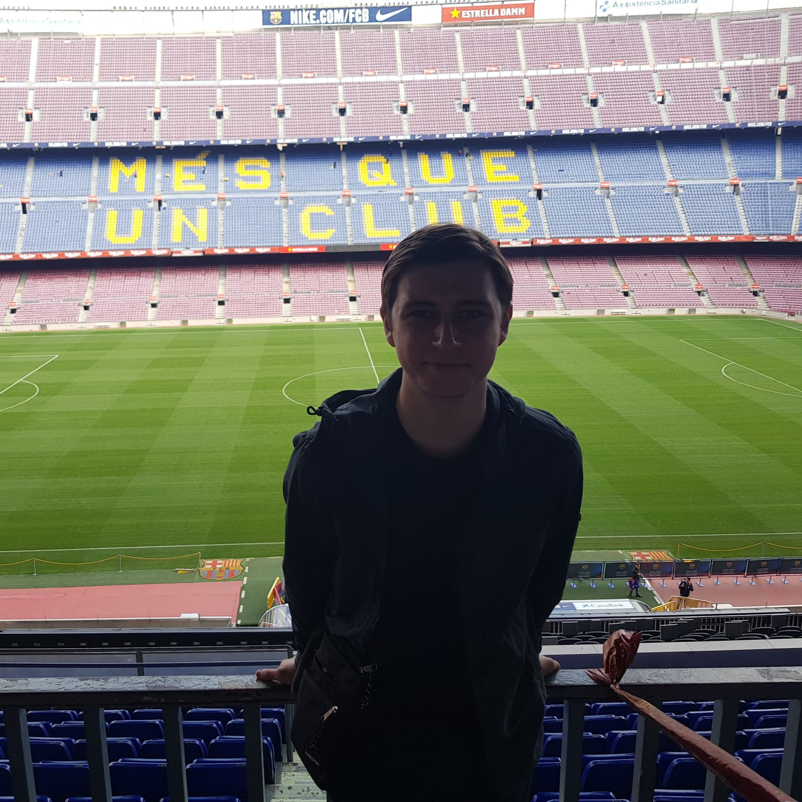
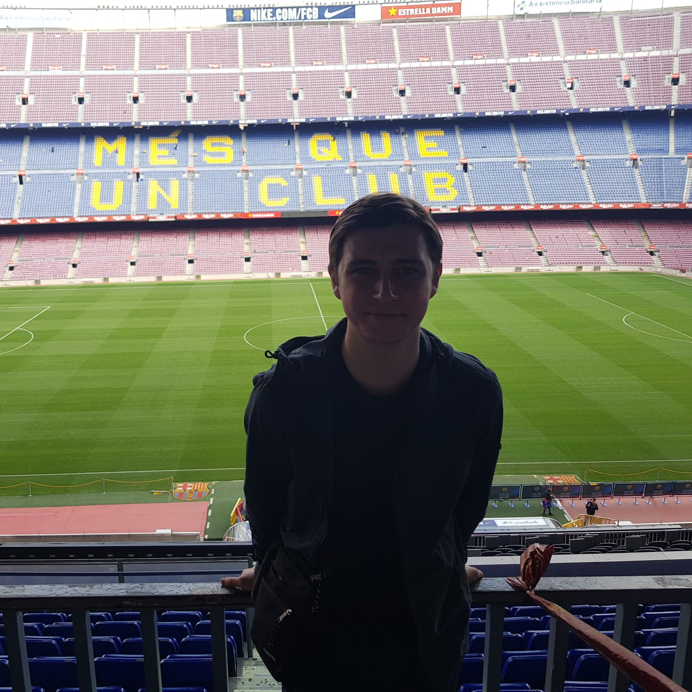

About Me
I am 23 years old and fom Manchester.I studied Business Management at Manchester Metropolitan
University where I finished with a first-class degree. The course entailed very little tech
orientated learning but it has always interested me, so that's why I have decided to join
Manchester Codes to learn how to programme!
Outside of education, my main interest has always been Football, most other things go on the back burner when it comes to the sport.
I am a life long Manchester United and I am a season ticket holder at Old Trafford and it's the highlight of my week when I get to go and watch them.
I am a big music fan, mainly indie music and I try to get to as many gigs as I possibly can.
Fun Fact:I once met Brandon Flowers (the lead singer of The Killers) in the changing room of a spa in Manchester, only a few hous before I saw him live.